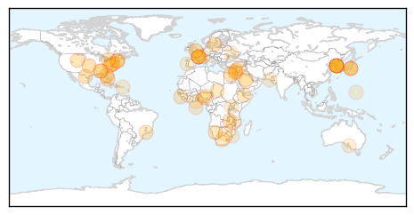

Unknown
30-Day Web Trend
0 alerts, 0 warnings

30-Day Twitter Trend
1 alerts, 0 warnings

Article Locations
Article Confidences

Top Articles:
- 0.997
- 61 people isolated in South Korea after recovered Mers patient infected again, East Asia News & Top Stories
- 0.996
- Over 60 People Isolated in S Korea After MERS Reinfection Scare
- 0.996
- Last S. Korea MERS patient rediagnosed with virus
- 0.996
- Last MERS Patient In South Korea Has Been Re-Diagnosed With The Disease Nine Days After Being Discharged From Hospital, Says Health And Welfare Ministry : Korea : koreaportal
- 0.963
- Danger of hospital infections
- 0.954
- Lyme disease endemic sparks concern in Alabama
- 0.932
- Shingles vaccine important for older people
- 0.929
- Lyme Disease: The Lesser Studied Evil
- 0.917
- Chicago Tribune
- 0.917
- Chicago Tribune
- 0.917
- Chicago Tribune
- 0.917
- Chicago Tribune
- 0.917
- Chicago Tribune
- 0.917
- Chicago Tribune
- 0.917
- Chicago Tribune
- 0.869
- 3 die of ‘unknown virus’ in Upper Egypt
- 0.857
- Outbreak linked to A&W cucumbers continues to spread
- 0.853
- State Vet informed community about VS virus at CWC forum Tuesday night
- 0.849
- Great Stories of the Great Plains: Staying healthy in the good old days of 1904
- 0.843
- Mercy Hospital offers free flu shots - Story
- 0.838
- Strep throat spike reported across Central Florida - Story
- 0.835
- Call on govt to revise health staffing system, employ qualified personnel
- 0.828
- Nasal flu vaccine now available for Delaware-area schools
- 0.817
- Enterovirus D68 not associated with higher death rate in children
- 0.784
- The Joy of Travel
- 0.777
- Patients turned away at Katutura hospital
- 0.744
- Vluchtelingencrisis: Europese Commissie brengt verslag uit over voortgang prioritaire maatregelen
- 0.730
- Yemen through the lens: ‘I’ve never seen such intense fighting’
- 0.730
- Turkish PM sacks security chiefs, pays homage to victims
- 0.730
- US to send 300 troops to aid fight against Boko Haram
- 0.730
- Knife attacks continue as Israelis seal off East Jerusalem
- 0.730
- Guinea's main opposition leader Diallo exits presidential race alleging election fraud
- 0.730
- Police stage rare protest in Paris against ‘lax’ judiciary
- 0.730
- France’s main CGT union launches ‘32-hour working week’ campaign
- 0.730
- Clinton comes out swinging in first Democratic debate
- 0.730
- Rousseff accuses Brazil opposition of 'seeking a coup'
- 0.698
- J. Craig Venter Debuts Elite Testing Service Via Health Nucleus
- 0.640
- Lyme Disease Treatment a Growing Concern Among Floridians
- 0.632
- Desdemona Despair
- 0.602
- The deadly disease
- 0.577
- Uganda: Disability and Death from Poor Medical Access
- 0.567
- Foot and Mouth disease persists in Chikwawa
- 0.558
- Congo fever claims two lives in Karachi
- 0.545
- Health board scours Europe to find more than 100 new nurses to fill positions
- 0.541
- International travel leads to outbreak of resistant shigellosis
- 0.527
- Dramatic rise in Lyme disease cases in Alabama prompts state health officer to warn medical professionals in 7 counties
- 0.521
- Head of surgery confronts Snelling live on air
- 0.519
- Interview: Artemisinin-based combination therapy effective in Botswana: experts - Xinhua
- 0.518
- Michigan State Officials Face Mounting Public Scrutiny For Water Crisis In Flint
- 0.518
- Drive by flu clinic open today in Woodstock
Showing top 50 articles...
Top Tweets:
- 0.702
- No aparece el artículo. Según el título presumo que habla de las parejas que tienen siempre una guerra fría en la casa.
- 0.686
- Odio la arena en un piso liso.
- 0.565
- Read more on ‘Malaria elimination – a public health best buy’ http://t.co/ccH7Lt4Yk3 MFAP2030
- 0.561
- RT: Aprendé a reírte de vos mismo, que te estás perdiendo un montón de chistes.
- 0.526
- Típico de las semanas con feriados,no se sabe hasta el domingo que puto día es
Ebola
30-Day Web Trend
2 alerts, 0 warnings

30-Day Twitter Trend
2 alerts, 0 warnings

Article Locations

Article Confidences

Top Articles:
- 1.000
- Ebola virus can linger in semen of survivors for 9 months, study shows
- 1.000
- Ebola after-effects unclear as nurse becomes critically ill
- 1.000
- Ebola nurse Pauline Cafferkey is critically ill
- 1.000
- Ebola found in the semen of some men nine months later
- 1.000
- Ebola Lingers in Semen for Months, Studies Confirm
- 1.000
- Response in Sierra Leone to Ebola Outbreak Saved 40,000 Lives: Study
- 1.000
- Ebola nurse Pauline Cafferkey's rapid decline after being 'cured' leaves experts staggered
- 1.000
- Ebola Virus: Scottish Nurse Pauline Cafferkey 'Critically Ill'
- 1.000
- How Does Ebola Come Back?
- 1.000
- Ebola Beds Prevented 40,000 Deaths
- 0.999
- British Nurse Pauline Cafferkey Now 'Critically Ill' After Her Ebola Relapse Worsens
- 0.999
- U.S. still vulnerable a year after Ebola outbreak, doctors say
- 0.999
- Ebola survivors can carry virus in their sperm ‘for nine months’
- 0.999
- Ebola nurse Pauline Cafferkey now critically ill
- 0.999
- Delivery Of 3,000 Ebola Treatment Beds Prevented 40,000 Deaths In Sierra Leone
- 0.999
- Ebola May Stay in Survivors' Semen for Many Months
- 0.999
- British Ebola nurse now 'critically ill'
- 0.999
- Johnson & Johnson Announces Start of Clinical Trial of Ebola Vaccine Regimen …
- 0.999
- UK's first Ebola patient 'critically ill,' in isolation
- 0.999
- British Ebola nurse Pauline Cafferkey 'critically ill'
- 0.999
- Does 'reactivated' Ebola pose a threat?
- 0.998
- British Ebola nurse Pauline Cafferkey critically ill
- 0.998
- British Ebola nurse Pauline Cafferkey critically ill
- 0.998
- British Ebola nurse now 'critically ill': hospital
- 0.998
- Ebola nurse Pauline Cafferkey 'critically ill' after condition deteriorates, hospital says
- 0.997
- Ebola experts unsure how many could be hit by return of disease as Pauline Cafferkey's condition deteriorates
- 0.997
- Ebola nurse Pauline Cafferkey in critical condition at London hospital isolation unit
- 0.997
- Ebola, Epic, the New York Times and the Culture of Accountability
- 0.997
- Give Me Liberty
- 0.996
- UK's first Ebola victim readmitted to hospital, deemed 'critically ill'
- 0.996
- Ebola lingers in semen for nine months
- 0.995
- Pauline Cafferkey, Nurse With Ebola Complications, Is 'Critically Ill'
- 0.994
- Ebola-hit nurse 'critically ill' in London hospital
- 0.994
- Ebola-hit nurse 'critically ill' in London hospital
- 0.991
- British Nurse Treated for Ebola Now 'Critically Ill'
- 0.989
- Nurse Pauline Cafferkey critically ill with Ebola relapse
- 0.987
- Nurse shares experience battling Ebola
- 0.984
- Ebola nurse Pauline Cafferkey 'critically ill' after condition deteriorates
- 0.982
- ‘Critically ill': Condition of British nurse thought cured of Ebola downgraded
- 0.982
- Pauline Cafferkey now CRITICALLY ill due to Ebola complications
- 0.981
- Ebola Virus Stays in Semen Months After Recovery
- 0.980
- Scottish nurse critically ill with relapse of Ebola
- 0.980
- clinical trial of preventive Ebola vaccine regimen in Sierra Leone
- 0.978
- UK nurse critically ill after Ebola infection returns
- 0.978
- China To Mass Produce Ebola Vaccine Developed By Chinese Military Scientists
- 0.976
- British Ebola nurse now 'critically ill'
- 0.974
- Ebola nurse now 'critically ill'
- 0.973
- Condition of hospitalized Ebola nurse in UK worsens
- 0.973
- Ebola nurse Pauline Cafferkey now 'critically ill'
- 0.973
- Ebola nurse Pauline Cafferkey now 'critically ill'
Showing top 50 articles...
Top Tweets:
- 0.996
- Ebola Virus Detector Performs Well - Science Times http://t.co/WHXchuvLjX ebola EVD
- 0.982
- Ebola virus decimates wild gorilla population - The Australian http://t.co/IFBPYVXFS5 ebola EVD
- 0.972
- .@EbolaPhone Dunno if 1 Ebola infection = immunity. Ebola Zaire vaccine isn't cross protective - why would infection be?
- 0.955
- New evidence that parts of Ebola virus hide in semen for months - http://t.co/9ktkjmoRWQ ebola
- 0.953
- Ebola in Sierra Leone: how worried are people? - BBC News http://t.co/77Ib1IMVvK ebola EVD
- 0.950
- U.S. still vulnerable a year after Ebola outbreak, doctors say - Washington Times http://t.co/UNn8yKyprY ebola EVD
- 0.940
- Introduction of Ebola treatment beds reduces large number of deaths, Ebola ... - http://t.co/A9wAAOLz1c http://t.co/EXIHJL0DUy ebola EVD
- 0.933
- UK Nurse With Ebola Critically Ill Again - WebMD http://t.co/dFKZe4V08e ebola EVD
- 0.929
- Ebola lingers in semen for nine months - http://t.co/ITTkezZsTD ebola
- 0.926
- Ebola Lingers in Semen for Months, Studies Confirm - http://t.co/Qb2yZPEHVZ ebola
- 0.922
- As of Sunday 11 October, no positive Ebola cases were confirmed in West Africa. However, high-risk contacts under observation in Guinea.
- 0.920
- If we had acted just a month earlier, we could have halved the number of Ebola ... - Quartz http://t.co/TXmXYUMJPb ebola EVD
- 0.916
- Ebola May Stay in Survivors' Semen for Many Months - http://t.co/ZiqxEgshb2 ebola
- 0.915
- Ebola May Persist This Long in Survivors' Semen - http://t.co/YZzf3OQWVX ebola
- 0.904
- Scottish Nurse Treated for Ebola Complications in Critically Ill Condition - Newsweek http://t.co/amvm4zeY2Z ebola EVD
- 0.895
- Dr. Nancy Snyderman on Ebola scandal: 'People wanted me dead' - Fortune http://t.co/7h7FYd6Wl2 ebola EVD
- 0.887
- Ebola survivors can carry virus in their sperm 'for nine months' - The Guardian http://t.co/9mx8KmPYQN ebola EVD
- 0.887
- Ebola may persist in semen for nine months - http://t.co/u2eegW9AGb ebola
- 0.887
- Australian Ebola clinic wins award - Yahoo7 News http://t.co/lsi9ZSi1E9 ebola EVD
- 0.882
- New in EID journal: Ebola in West Africa- CDC’s role in epidemic detection, control, and prevention: http://t.co/DNiLGIy9wj
- 0.880
- UK's first Ebola patient 'critically ill,' in isolation - CNN http://t.co/ilIQIJjaqC ebola EVD
- 0.867
- China to mass produce Ebola vaccine - Xinhua http://t.co/901vX5xr9B ebola EVD
- 0.866
- In 3 Ebola affected W. African countries, CDC & partners trained >25,000 health care workers in infection control http://t.co/GYbXouFzQd
- 0.863
- Scottish nurse who recovered from Ebola critically ill - USA TODAY http://t.co/N7YAiS35e7 ebola EVD
- 0.860
- Ebola lingers in semen for nine months - BBC News http://t.co/0P5a4kBSkW ebola EVD
- 0.855
- In wake of Ebola epidemic, Margaret Chan wants countries to put their money ... - Science /AAAS http://t.co/n9ilZr4aiX ebola EVD
- 0.854
- We Now Know More About Sexually Transmitted Ebola - TIME http://t.co/Fn8jxTuIgU ebola EVD
- 0.841
- We Now Know More About Sexually Transmitted Ebola - http://t.co/Qhc6m1AIKz ebola
- 0.831
- Active Compound Prevents Ebola Virus In Monkeys, Now Undergoes Phase 1 ... - Youth Health Magzine http://t.co/7oY4mmxSNX
- 0.821
- Condition of hospitalized Ebola nurse in UK worsens - AOL News http://t.co/4DitmRbYsL ebola EVD
- 0.794
- Vaccine offers new hope for gorrillas ravaged by ebola - The Times (subscription) http://t.co/kT2Xxa34ZS ebola EVD
- 0.778
- Chinese firm says plans to 'mass produce' Ebola vaccine - Reuters http://t.co/DJ7PU0Bztm ebola EVD
- 0.768
- RT: Study: Most health workers infected in non-Ebola settings http://t.co/ihjr2eep2G
- 0.754
- 'Critically ill': Condition of British nurse thought cured of Ebola downgraded - Washington Post http://t.co/MumHh2XFJ4 ebola EVD
- 0.741
- China To Mass Produce Ebola Vaccine Developed By Chinese Military Scientists - International Busin... http://t.co/OwzoZjkXb6 ebola EVD
- 0.738
- Introduction of Ebola treatment beds reduces large number of deaths, Ebola ... - http://t.co/4phXncKnif http://t.co/9Es7mHBNko
- 0.736
- Are post-Ebola reconstruction efforts neglecting public health laboratory systems?t http://t.co/ho65kHoqfN
- 0.731
- AFD Blog `@WHO: Study Shows Ebola Virus Fragments May Be Detectable In Semen For > 9 Months' http://t.co/k4LLiztjgZ
- 0.729
- Chinese firm to 'mass produce' Ebola vaccine - Citizen TV (press release) http://t.co/tFFCECPdw3 ebola EVD
- 0.701
- The only upside of the awful West African Ebola outbreak is much will be learned, including this about survivors. https://t.co/YZjTiI2IxK
- 0.673
- How many other Ebola survivors in West Africa have fallen critically ill or died without public knowledge? Urgent need for investigation.
- 0.658
- RT: Ebola region goes 2 weeks with no cases; UK nurse critical http://t.co/5XxjeFUOKD
- 0.651
- For 2nd week running, there are no new Ebola cases. Not out of the woods, tho; contacts of relapsed UK case watched http://t.co/7SvEWxZn7U
- 0.629
- RT: You (the world) can't help fix a post- Ebola health system in SierraLeone or even Guinea and Liberia if you... http://…
- 0.612
- Interesting Ebola research answers some questions, raises some others. 1) yes, some male survivors have virus in their semen for months 1/n
- 0.600
- Ebola found in the semen of some men nine months later - The Verge http://t.co/w6p0xed84J ebola EVD
- 0.589
- How the “polio surge” in Nigeria helped stop Ebola - Fortune http://t.co/sCXVcG97i8 ebola EVD
- 0.583
- British Ebola nurse Pauline Cafferkey now 'critically ill' - http://t.co/VxCDJoj5yK http://t.co/PN7xnwtBlU ebola EVD
- 0.580
- U.S. still vulnerable a year after Ebola outbreak, doctors say - Washington Times http://t.co/NbQVCWKiFN
- 0.553
- Ebola was such a massive colossus http://t.co/GD9iZuJq8J
Showing top 50 tweets...